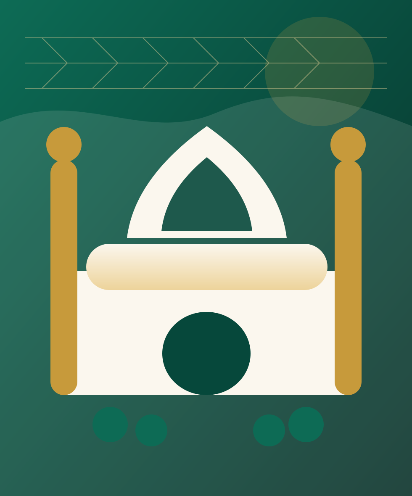

Pengalaman Pendampingan
Teman Perjalanan Menuju Baitullah
Wujudkan Niat Suci, Berangkat dengan Tenang
Kami mendampingi perjalanan ibadah Haji dan Umroh dengan bimbingan, manasik, dan pelayanan yang amanah.

Pendampingan Jamaah
Manasik • Bimbingan • Pelayanan
Amanah & Terarah
Menemani Setiap Langkah Menuju Baitullah
Jamaah yang Telah Dibimbing
Program Manasik
Komitmen Pelayanan
Keunggulan
Mengapa Memilih Saffienatun Najah?
Bimbingan Manasik
Persiapan ibadah yang sistematis dan mudah dipahami.
Pendampingan Jamaah
Pendampingan sejak persiapan hingga perjalanan ibadah.
Pembimbing Berpengalaman
Didampingi oleh pembimbing yang memahami kebutuhan jamaah.
Perhatian untuk Lansia
Pelayanan yang mempertimbangkan kenyamanan jamaah lanjut usia.
Informasi Transparan
Informasi program dan biaya disampaikan dengan jelas.
Pelayanan Amanah
Mengutamakan kenyamanan, ketepatan informasi, dan amanah.
Program
Pilihan Program Ibadah
Jadwal
Rencana Keberangkatan
Manasik
Persiapkan Ibadah Sebelum Berangkat
Pengenalan Ibadah
Persiapan Ihram
Praktik Thawaf
Praktik Sa'i
Tahallul
Simulasi Perjalanan
Pendaftaran
Dari Niat Hingga Berangkat
Ceritakan kebutuhan dan rencana keberangkatan.
Admin membantu memilih program yang sesuai.
Lengkapi data dan dokumen awal.
Ikuti pembinaan dan praktik ibadah.
Finalisasi perlengkapan dan informasi teknis.
Perjalanan ibadah didampingi dengan tenang.
Fasilitas
Layanan Disesuaikan dengan Program
Galeri
Ruang Dokumentasi Kegiatan
Testimoni
Catatan Jamaah
Alhamdulillah, proses bimbingan terasa jelas dan kami lebih siap menghadapi perjalanan ibadah.
Jamaah Saffienatun Najah Placeholder testimoni, ganti dengan data asli.Artikel
Lihat semua artikel
Bekal Sebelum ke Baitullah
FAQ
Pertanyaan yang Sering Diajukan
Sudah Siap Mewujudkan Niat ke Baitullah?
Konsultasikan rencana perjalanan Anda bersama tim Saffienatun Najah.
Konsultasi via WhatsApp